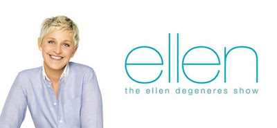
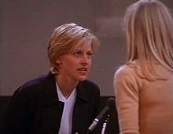

The Ellen Show
The Ellen DeGeneres Show (often shortened to Ellen and stylized as ellen) is an American television variety comedy talk show hosted by comedian Ellen DeGeneres. The show has won 59 Daytime Emmy Awards as of 2017, including four for Outstanding Talk Show and six for Outstanding Talk Show Entertainment, surpassing the record held by The Oprah Winfrey Show, which won nine.

The show also won 17 People's Choice Awards. The talk show's YouTube channel is currently charted as being in the top 20 most-subscribed YouTube channels. On January 4, 2016, it was announced that the show had been renewed for three additional seasons through 2020.In December 2018, DeGeneres announced that she's considering ending the show, when her contract expires in 2020.

In 1966, Ellen began negotiating with ABC to have Morgan (the character she was playing) come out as gay.With DeGeneres hinting at her and her character's coming out both off-screen and within the show, the rumors were confirmed when the episode went into production in March 1997.